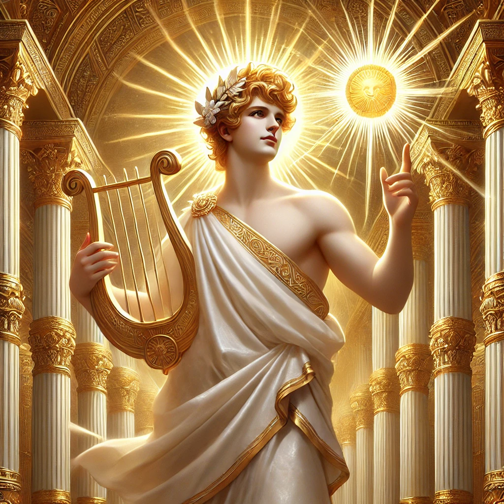

<!DOCTYPE html>
<html lang="en">
<head>
    <meta charset="UTF-8">
    <meta name="viewport" content="width=device-width, initial-scale=1.0">
    <title>Ares - Greek Mythology with Mr. Sovocool</title>
    <style>
        body {
            font-family: Arial, sans-serif;
            margin: 0;
            padding: 0;
            background-image: url('background.webp');
            background-size: cover;
            background-attachment: fixed;
            background-position: center;
            background-repeat: no-repeat;
            color: white;
        }
        .header-banner {
            background-color: rgba(0, 0, 139, 0.8);
            width: 100%;
            text-align: center;
            padding: 20px 0;
            position: relative;
        }
        .header-banner img {
            max-width: 60%;
            height: auto;
        }
        .container {
            padding: 20px;
            background-color: rgba(0, 0, 0, 0.75);
            margin: 20px;
            border-radius: 10px;
            text-align: center;
        }
        .container h1 {
            color: yellow;
            font-size: 40px;
        }
        .container h3 {
            font-size: 22px;
            font-style: italic;
            font-weight: normal;
            color: white;
        }
        .container p {
            text-align: left;
            font-size: 20px;
            margin: 10px 0;
        }
        .container p strong {
            color: yellow;
        }
        .container p em {
            font-style: italic;
            color: white;
        }
        .god-image {
            width: 50%;
            max-width: 400px;
            border-radius: 10px;
        }
        .grid {
            display: grid;
            grid-template-columns: repeat(5, 1fr);
            gap: 20px;
            max-width: 900px;
            margin: 0 auto;
        }
        .grid a {
            text-decoration: none;
            color: white;
            font-size: 18px;
            font-weight: bold;
            display: flex;
            flex-direction: column;
            align-items: center;
            justify-content: center;
            position: relative;
            border-radius: 10px;
            overflow: hidden;
        }
        .grid img {
            width: 100%;
            height: auto;
            border-radius: 10px;
        }
        .grid span {
            position: absolute;
            bottom: 10px;
            background-color: rgba(0, 0, 0, 0.6);
            color: white;
            padding: 5px 10px;
            border-radius: 5px;
        }
    </style>
</head>
<body>
    <div class="header-banner">
        
    </div>
    <div class="container">
        <h1>Ares</h1>
        <h3>God of War, Violence, and Bloodshed</h3>
        
        
	<p><strong>Roman Name:</strong> <em>Mars</em></p>        
	<p><strong>Parents:</strong> <em>Zeus and Hera</em></p>
        <p><strong>Spouse(s):</strong> <em>None</em></p>
        <p><strong>Siblings:</strong> <em>Eileithyia, Hebe, Hephaestus, and other half-siblings fathered by Zeus</em></p>
        <p><strong>Children:</strong> <em>Phobos, Deimos, Harmonia, Eros, and others</em></p>
        <br>
        <p>Ares, the Greek god of war, was known for his fierce nature and love of battle. Unlike his sister Athena, who represented strategic warfare, Ares embodied the brutal and chaotic side of combat. He was often depicted as a powerful warrior, wearing armor and carrying a spear or sword. His sacred animals included the vulture and the dog, both linked to war and destruction.</p>
        <p>While Ares was a son of Zeus and Hera, his father often disliked him, considering him reckless and destructive. Despite his strength, he was not always victorious in battle, and he suffered defeats at the hands of Athena and even mortal heroes. He had many lovers, with Aphrodite, the goddess of love, being the most famous. Their union produced several children, including Phobos (fear) and Deimos (terror), who accompanied him into battle.</p>
        <p>Though feared and respected, Ares was not widely worshiped in Greece, as many saw him as a bringer of unnecessary violence. However, in Rome, his counterpart Mars was honored as a protector and father of the Roman people.</p>
        <br>
      <p><strong style="color: yellow;">Notable Stories About Ares:</strong></p>
        <ul style="text-align: left; font-size: 20px; list-style-type: none; padding-left: 40px;">
            <li><a href="#story1" style="color: white; text-decoration: underline; font-weight: normal;">Ares and Aphrodite’s Affair</a></li>
            <li><a href="#story2" style="color: white; text-decoration: underline; font-weight: normal;">Ares, Athena and the Trojan War</a></li>
            <li><a href="#story3" style="color: white; text-decoration: underline; font-weight: normal;">The Capture of Ares by the Aloadae Giants</a></li>
            <li><a href="#story4" style="color: white; text-decoration: underline; font-weight: normal;">The Murder of Halirrhothius</a></li>
            <li><a href="#story5" style="color: white; text-decoration: underline; font-weight: normal;">The Founding of The Areopagus</a></li>    
        </ul>
      <br>  
      <h2 id="story1" style="color: yellow; font-weight: bold; text-align: center;">Ares and Aphrodite’s Affair</h2>
        <p>Ares, the god of war, was known for his strength and passion, but he had a special love for Aphrodite, the goddess of beauty and love. However, there was one big problem—Aphrodite was married to Hephaestus, the god of blacksmiths. Hephaestus was clever and skilled, but he was not as handsome or powerful as Ares. Despite her marriage, Aphrodite and Ares often met in secret, hoping to keep their love hidden.</p> <p>One day, Helios, the sun god, saw Ares and Aphrodite together. He watched everything that happened in the heavens and the earth, so he could not be fooled. Wanting to expose them, Helios went straight to Hephaestus and told him about their affair. Furious and humiliated, Hephaestus came up with a plan to catch them.</p> <p>Hephaestus spent hours in his forge, crafting a special net made of fine golden chains. Though the chains were thin, they were unbreakable. He set the trap over his own bed and waited. Soon, Ares and Aphrodite met in secret once again. As they lay together, the golden net dropped from above, trapping them both. No matter how hard Ares struggled, he could not break free.</p> <p>Hephaestus called the other gods to come and see the trapped lovers. Many of them laughed at the sight, especially Apollo and Hermes, who joked about wanting to trade places with Ares. However, some goddesses refused to come, feeling it was improper to mock Aphrodite. Even though Ares was humiliated, he remained proud and defiant.</p> <p>After a while, Poseidon, the god of the sea, convinced Hephaestus to release them. Hephaestus agreed, but only after making Ares and Aphrodite promise to never meet like this again. Once freed, Ares fled to Thrace, his homeland, while Aphrodite returned to Cyprus. Despite the embarrassment, their love was not truly over, and they would continue to have children together, including Phobos (fear) and Deimos (terror), who later accompanied Ares into battle.</p>

      <br>  
      <h2 id="story2" style="color: yellow; font-weight: bold; text-align: center;">Ares, Athena and the Trojan War</h2>
        <p>During the Trojan War, Ares fought on the side of the Trojans, while his sister Athena supported the Greeks. Ares loved the chaos of battle and did not care much for strategy. He simply wanted to fight, causing destruction wherever he went. With Ares on their side, the Trojans became fierce warriors, striking fear into the hearts of the Greeks.</p> <p>Athena, the goddess of wisdom and war strategy, knew she had to stop Ares. Unlike her brother, she fought with skill and intelligence rather than brute force. She decided to help Diomedes, a brave Greek warrior, by giving him the power to see the gods on the battlefield. With Athena’s guidance, Diomedes became stronger and more fearless.</p> <p>As Ares charged into battle, swinging his spear wildly, Diomedes faced him without fear. Just as Ares prepared to strike, Athena stepped in. She deflected Ares’ attack and guided Diomedes’ spear straight into Ares’ body. The god of war let out a terrible scream that shook the battlefield. Even though he was immortal, the pain was unbearable.</p> <p>Wounded and humiliated, Ares fled to Mount Olympus, crying out to Zeus. He complained that Athena had unfairly helped Diomedes and that he had been wounded because of her tricks. But Zeus was not sympathetic. He scolded Ares, telling him that he was reckless and destructive. Unlike Athena, who used war wisely, Ares only brought chaos and bloodshed.</p> <p>Defeated, Ares had no choice but to leave the battlefield for a while. Without him, the Trojans lost their advantage, and the Greeks continued to fight bravely. This battle showed that brute strength alone was not enough to win a war—strategy and wisdom, represented by Athena, were far more powerful than blind rage.</p>
        <br>
          <h2 id="story3" style="color: yellow; font-weight: bold; text-align: center;">The Capture of Ares by the Aloadae Giants</h2>
        <p>Ares, the mighty god of war, was known for his strength and love of battle. However, there was a time when even he was powerless. This happened when he was captured by the Aloadae, two giant brothers named Otus and Ephialtes. These giants were the sons of Poseidon and were incredibly strong. They wanted to prove they were more powerful than the gods, so they came up with a bold plan—to storm Mount Olympus and take control.</p> <p>Before attacking Olympus, Otus and Ephialtes decided to capture Ares. They knew that if they could imprison the god of war, it would weaken the Olympians. Using their great strength and teamwork, the two giants managed to overpower Ares in battle. Once they had him, they locked him inside a large bronze jar, trapping him completely. No matter how hard he struggled, Ares could not escape.</p> <p>Ares remained trapped in the jar for thirteen long months. He grew weaker and angrier with each passing day. The other gods did not know where he was, and Ares feared he might never be freed. Luckily, the goddess Eriboea, the stepmother of the giants, saw what they had done. She secretly told Hermes, the messenger of the gods, about Ares' imprisonment.</p> <p>Hermes, who was clever and quick, immediately set out to rescue Ares. With the help of Artemis, the goddess of the hunt, he tricked the giants. Artemis appeared before Otus and Ephialtes, making them believe she wanted to marry one of them. The brothers, who both desired her, began fighting over who should have her. As part of the trick, she led them into a trap, and they ended up killing each other by accident.</p> <p>With the giants dead, Hermes rushed to the bronze jar and freed Ares. Although he was embarrassed by his capture, he was grateful to be rescued. From then on, Ares never underestimated the power of trickery and teamwork, even in the face of brute strength.</p>
      <br>  
      <h2 id="story4" style="color: yellow; font-weight: bold; text-align: center;">The Murder of Halirrhothius</h2>
        <p>Ares, the fierce god of war, was known for his love of battle and his quick temper. One day, his anger led him to commit a terrible crime—the murder of Halirrhothius. Halirrhothius was the son of Poseidon, the powerful god of the sea. He was a mortal man, but he was arrogant and thought he could do whatever he wanted.</p> <p>One day, Halirrhothius saw Alcippe, Ares' daughter. She was beautiful, and he desired her. Ignoring all warnings, Halirrhothius tried to take her by force. When Ares found out, he was filled with rage. As the god of war, he never hesitated to fight, especially when it came to protecting his family. Without a second thought, he hunted Halirrhothius down and killed him.</p> <p>Since Halirrhothius was the son of Poseidon, his death caused a great uproar among the gods. Poseidon was furious and demanded justice. He insisted that Ares be put on trial for his crime. This was rare, as gods were usually not punished for their actions. However, Zeus agreed, and the trial was held on a special hill in Athens, near the Acropolis.</p> <p>The hill became known as the Areopagus, meaning "Hill of Ares." There, Ares stood before the other gods to defend himself. He argued that he had killed Halirrhothius to protect his daughter and that his actions were justified. After hearing his case, the gods ruled in Ares’ favor, deciding that he was not guilty.</p> <p>Even though Ares was freed, this event was important in Greek mythology. The Areopagus later became the name of the court where serious crimes, like murder, were judged in Athens. Ares' trial showed that even the gods had to answer for their actions, and it became a symbol of justice in the city.</p>
      <br>  
      <h2 id="story5" style="color: yellow; font-weight: bold; text-align: center;">The Founding of The Areopagus</h2>
        <p>In ancient Athens, there was a special court called the Areopagus, named after Ares, the god of war. The story of its founding began when Ares committed a great crime—he killed Halirrhothius, the son of Poseidon. Halirrhothius had tried to harm Ares’ daughter, Alcippe, and in a fit of rage, Ares struck him down. But killing a son of Poseidon was no small matter, and the other gods demanded justice.</p> <p>Poseidon, furious over the death of his son, insisted that Ares be put on trial. This was unusual, as gods were rarely judged for their actions. Zeus, the king of the gods, agreed to hold the trial, but it had to take place on a special hill in Athens, near the Acropolis. The gods gathered there to listen to the case, making it the first divine court in history.</p> <p>Ares stood before the gods and defended himself. He argued that he had only acted to protect his daughter and that his actions were justified. The gods carefully considered both sides before making their decision. In the end, Ares was found not guilty, as his actions were seen as an act of justice rather than a crime.</p> <p>After the trial, the hill where Ares had been judged became a place of great importance. It was named the Areopagus, or “Hill of Ares,” in honor of the event. Later, the people of Athens used this site as their highest court, where they judged serious crimes, including murder. The court of the Areopagus became a symbol of fairness and justice in Athens.</p> <p>Even though Ares was a god of war and chaos, his trial led to the creation of one of the most respected courts in Greece. The Areopagus remained an important part of Athenian law for centuries, proving that even in a world ruled by gods, justice was something to be valued.</p>
        <br>
    </div>
<br>
        <p style="text-align: center; font-weight: bold;">Click on an image below to learn more about the Olympians:</p>
        <div class="grid">
            <a href="index.html"><span>Home</span></a>
	    <a href="zeus.html"><span>Zeus</span></a>
            <a href="hera.html"><span>Hera</span></a>
            <a href="poseidon.html"><span>Poseidon</span></a>
            <a href="demeter.html"><span>Demeter</span></a>
            <a href="athena.html"><span>Athena</span></a>
            <a href="apollo.html"><span>Apollo</span></a>
            <a href="artemis.html"><span>Artemis</span></a>
            <a href="aphrodite.html"><span>Aphrodite</span></a>
            <a href="hephaestus.html"><span>Hephaestus</span></a>
            <a href="hermes.html"><span>Hermes</span></a>
            <a href="dionysus.html"><span>Dionysus</span></a>
            <a href="hades.html"><span>Hades</span></a>
            <a href="hestia.html"><span>Hestia</span></a>
        </div>
		<br><br>
    <p class="copyright" style="text-align: center;">&copy; 2025 Stephen Sovocool</p>
    </div>
</body>
</html>
